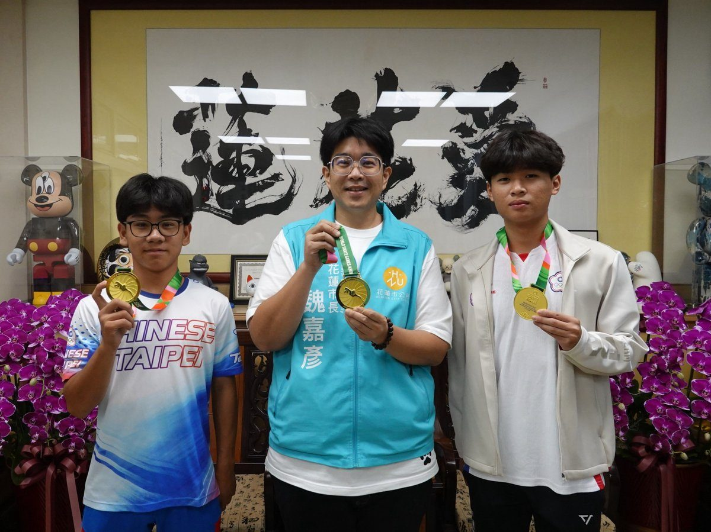

花蓮輪滑雙金揚威世界 魏嘉彥表揚楊凱崴楊皓宇

可樂電子報小編/編輯
花蓮輪滑好手楊凱崴、楊皓宇十月參加在巴拉圭舉行的「2026年世界自由式輪滑錦標賽」，分別勇奪速度過樁成年男子組及青年男子組第一名，為臺灣與家鄉花蓮爭光；花蓮市長魏嘉彥今（6）日頒獎表揚，教練陳彥偉及兩名選手的家人到場共享奪冠喜悅。

魏嘉彥肯定兩人以扎實訓練與堅定毅力，在國際賽場展現實力。他表示，從花蓮的訓練場一路滑向世界舞臺，再帶著金牌回到家鄉，年輕選手的表現令人振奮；冠軍背後是日復一日的練習，以及面對挫折仍持續努力的堅持，市公所公開表揚，盼讓更多市民看見花蓮運動人才的成果。

本屆賽事楊皓宇在速度過樁青年男子組脫穎而出，楊凱崴則在成年男子組激烈競爭中摘下金牌。兩人在不同年齡組別雙雙登頂，展現花蓮選手的競技實力，也讓在地培訓成果躍上世界舞臺；市公所表示，這分榮耀屬於選手、教練與一路陪伴的家長。

談起參賽經驗，就讀國立體育大學的楊凱崴與花蓮高中的楊皓宇都表示，這是各自參賽以來成績最好的一次，對賽事場地也給予高度肯定。兩人也把握機會觀摩各國選手的臨場表現，累積國際賽事經驗，認為此行不僅收穫金牌，更拓展視野，對未來訓練與賽事準備很有幫助。

教練陳彥偉說，速度過樁考驗選手的速度、平衡與精準控制能力，必須在快速前進的過程中掌握節奏，流暢穿越樁列。看似短暫的競賽，背後需要反覆磨練起步、加速及過樁技巧，並在比賽壓力下維持穩定，兩位選手能站上最高頒獎臺，正是長期訓練累積的成果。

魏嘉彥也感謝陳彥偉的用心指導與家長長期支持，強調培養一名運動選手，除了選手本身投入，還需要教練協助調整技術、突破瓶頸，以及家人在生活與心理上的陪伴。他勉勵兩人帶著奪冠信心繼續精進，未來在國際賽事挑戰自我，也鼓勵更多喜愛運動的孩子勇敢嘗試、持續練習。
📸 更多現場紀實影像


🌟 掌握花蓮在地第一手資訊・歡迎訂閱追蹤
深度紀實報導、在地精采影音專題，第一時間接收最新消息！